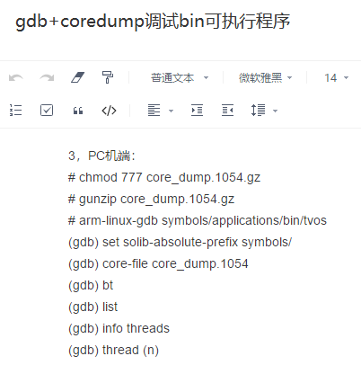
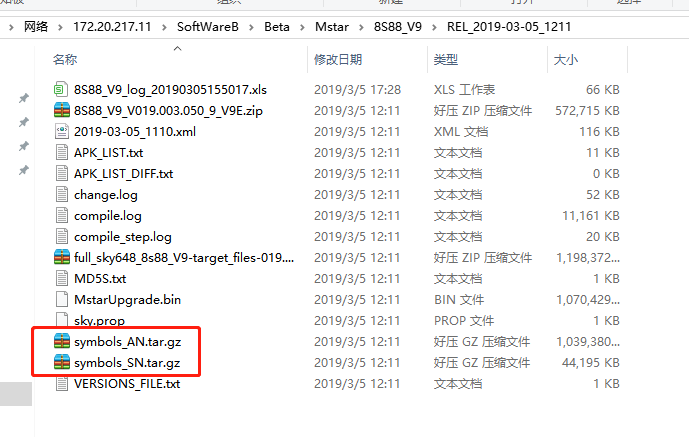
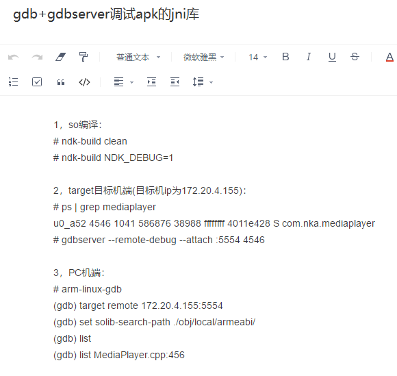
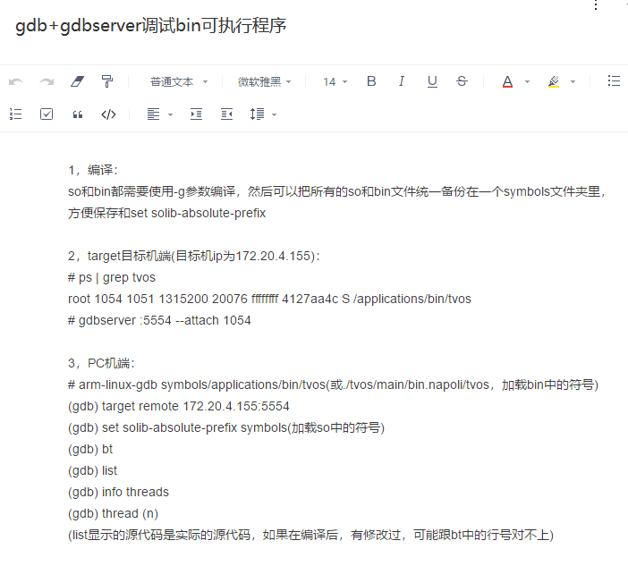
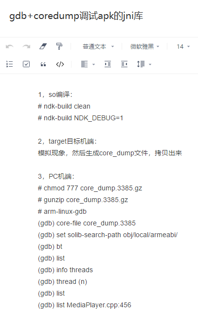

Minimal SYStem_韩强
介绍
- 我今天先分享一下MSYS吧，可能有人还不知道，MSYS就是Minimal SYStem，是windows系统下的一个linux环境，可能以前大家用过Cygwin，但是Cygwin实在是不好用，MSYS感觉体验还是不错的
- 因为我们要调试的机器是linux或是Android的，Android本质也是linux，所有大家可能都会在PC的windows环境下调试linux设备，这个后面大家应该都可能会用的上
- 后续建议大家学习一下linux下的在线调试方法，gdb，会使用后在某些场景下还是很有用的，特别是linux开发，比如进程异常挂掉了，产生coredump了，就比较适合使用gdb定位问题
- 对于Android的话，也可以用来调试jni库，Android下异常挂掉的话，有tombstone已经是更方便了，但是学会gdb调试，才像个真正的高手.但是Android下针对没用挂掉的情况，纯粹是在调试jni的话，还是可以的，只是gdb确实是很考验能力的，都是命令来操作的
- 这个是在linux服务器环境下编译gdb和gdbserver的，大家可以参考一下 链接
- 这个是在windows下的MSYS2环境下编译gdb的，gdbserver我还没用编译成功，但是gdbserver直接使用linux服务器环境下的就可以了，gdbserver是要拷贝的电视上的，gdb是在PC端，不过我感觉linux服务器环境下编译出来的gdb应该也可以直接拷贝的MSYS2下使用，但是我没有实践，我主要也是想在MSYS2下实践一下编译gdb的过程 链接
安装
安装环境
系统版本：Windows 10 专业版
系统类型：64位操作系统，基于x64的处理器
下载
在首页，里面有下载链接和安装说明。
当前64位版本是msys2-x86_64-20180531.exe
直接点击msys2-x86_64-20180531.exe安装就行了，需要留意的是尽量不要安装在Program Files这种有空格的目录中。
修改镜像地址，加快安装工具时的下载速度：
（此处的根目录为MSYS2的安装目录）
在/etc/pacman.d/mirrorlist.mingw32中前面增加Server = http://mirrors.ustc.edu.cn/msys2/mingw/i686/
在/etc/pacman.d/mirrorlist.mingw64中前面增加Server = http://mirrors.ustc.edu.cn/msys2/mingw/x86_64/
在/etc/pacman.d/mirrorlist.msys中前面增加Server = http://mirrors.ustc.edu.cn/msys2/msys/$arch/
更新核心系统包
打开msys2_shell.cmd就可以启动了。
执行如下命令：
（Update the package database and core system packages with: ）
pacman -Syu
当执行打印出如下警告信息后
警告：terminate MSYS2 without returning to shell and check for updates again
警告：for example close your terminal window instead of calling exit
关闭MSYS2终端，重新打开，再执行如下命令：
（If needed, close MSYS2, run it again from Start menu. Update the rest with: ）
pacman -Su
安装gcc和make：
pacman -S gcc
pacman -S make
至此，MSYS2编译和运行环境都搭建好了。
调试方法
- 产生coredump的方法，大致是这样的




